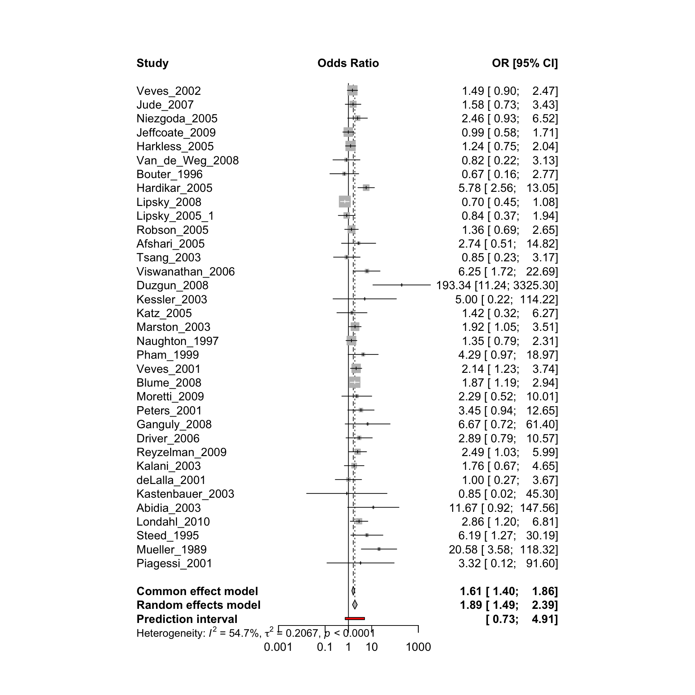
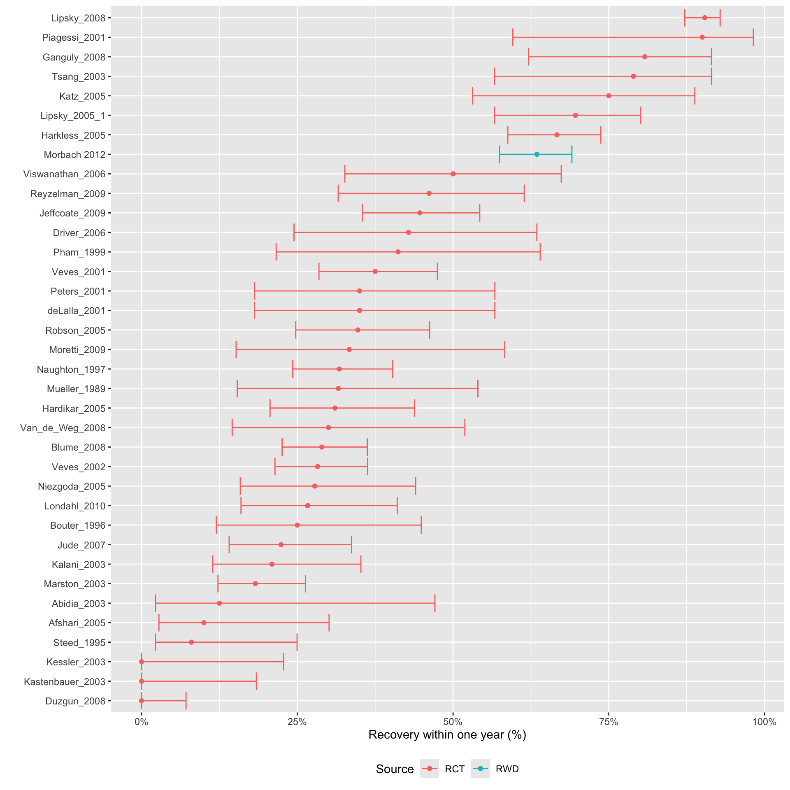
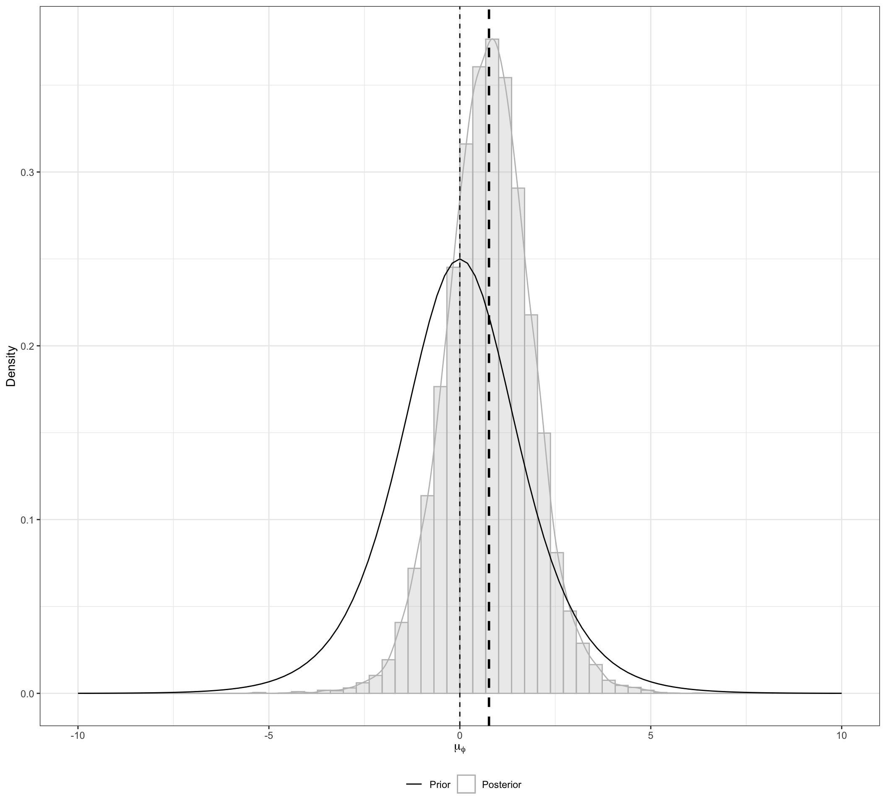
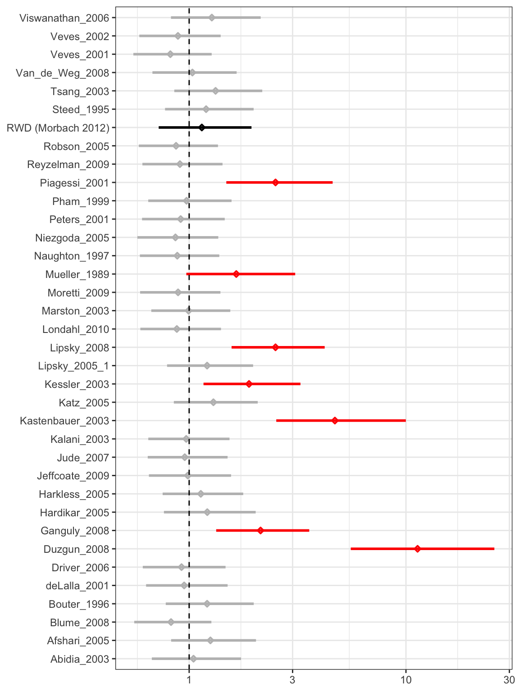
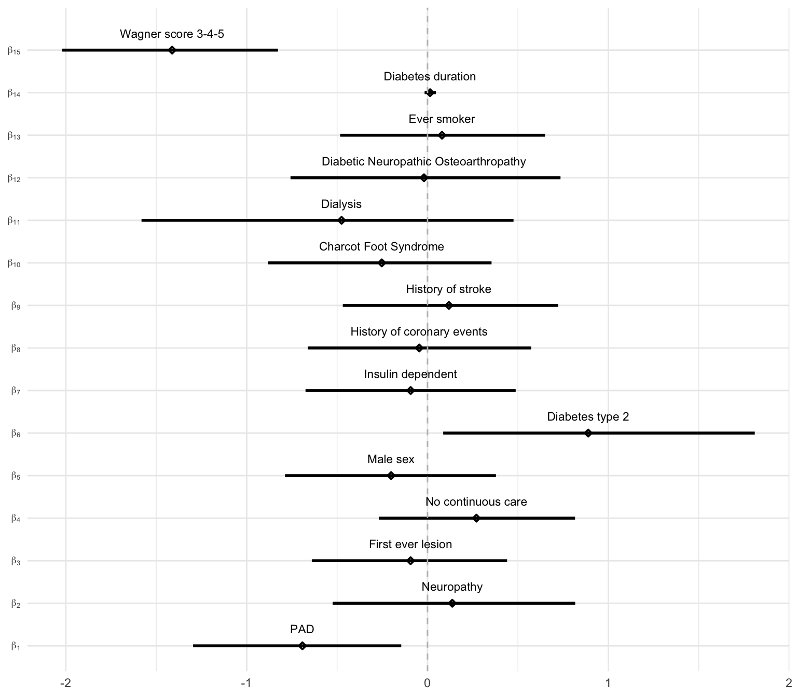
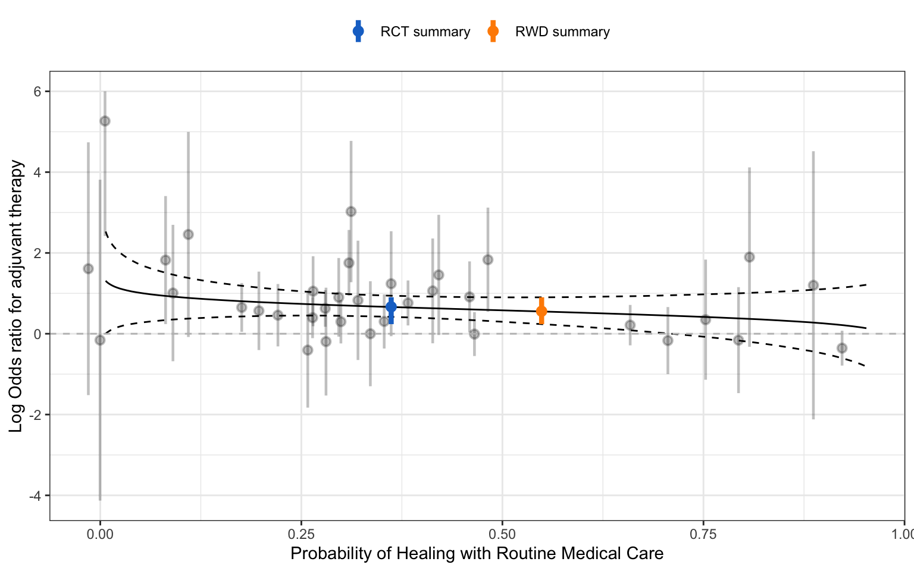
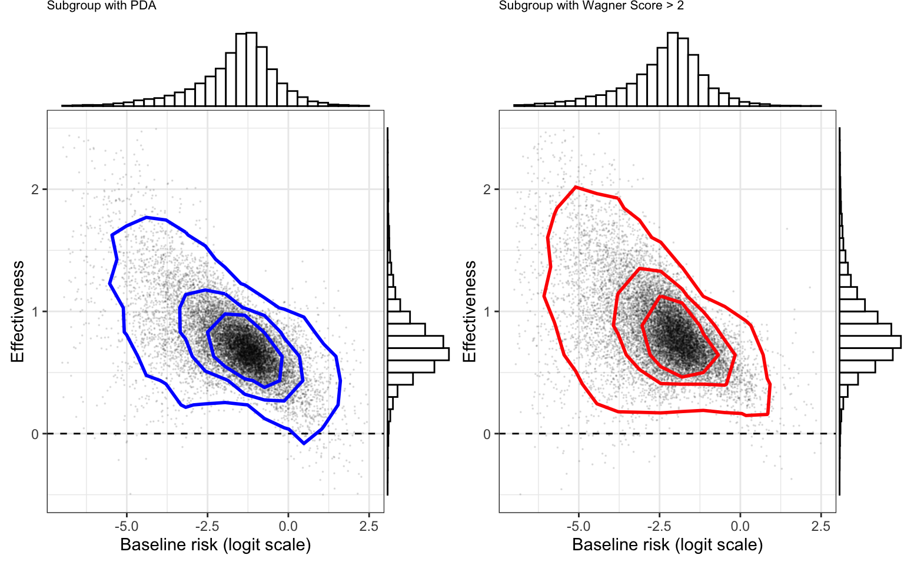

library(rjags)Chapter 13 — Individual Participant Data Meta-analysis of clinical trials and real-world data
Thomas P.A. Debray ![]()
Software requirements
The hierarchical meta-regression analysis in this chapter uses the jarbes package, which requires JAGS (Just Another Gibbs Sampler) to run Bayesian models.
JAGS must be installed separately from R. Readers can download it from the official JAGS project page.
After installing JAGS, restart R or RStudio and verify that the interface loads successfully:
Once JAGS has been installed and verified, install the required R packages using the following command:
# Install the required CRAN packages before running this chapter.
install.packages(c(
"ggplot2", "dplyr", "gridExtra",
"table1", "jarbes", "GGally", "kableExtra",
"metafor", "meta", "coda"
))Introduction
Hierarchical Meta-Regression
We illustrate the implementation of hierarchical meta-regression using an example that involves the following data sources:
- Aggregate data from 35 randomized trials investigating the efficacy of adjunctive treatments in managing diabetic foot problems compared with routine care
- Individual participant data from a prospective cohort study investigating patient and limb survival in patients with diabetic foot ulcers
Aggregate data
We first retrieve the randomized evidence and summarize the treatment effect estimates using a random effects meta-analysis:
library(dplyr)
library(jarbes)
library(metafor)
library(meta)
data("healing")
addat <- escalc(measure="OR", ai=y_t, bi=n_t-y_t, ci=y_c, di=n_c-y_c, data=healing)
results.ADJ <- metagen(TE = yi, seTE = sqrt(vi),
studlab = Study, data = addat,
sm = "OR",
prediction = TRUE)The corresponding forest plot is depicted below. The endpoint is healing without amputations within a period less than or equal to 1 year.

The random effects meta-analysis yielded a pooled odds ratio of 1.89. However, substantial between-study heterogeneity was found, with \(\tau\) = 0.45.
Individual participant data
Subsequently, we retrieve the individual participant data:
data("healingipd")
IPD <- healingipd %>% dplyr::select(healing.without.amp, PAD, neuropathy,
first.ever.lesion, no.continuous.care,
male, diab.typ2, insulin, HOCHD,
HOS, CRF, dialysis, DNOAP, smoking.ever,
diabdur, wagner.class)Briefly, these IPD were obtained from a prospective cohort study enrolling consecutive patients with diabetic foot ulcers (DFUs) and without previous major amputation in a single diabetes center between June 1998 and December 1999 (Morbach et al. 2012). The baseline characteristics of the study population are summarized below:
| Healing without amputation (N=165) |
No healing without amputation (N=95) |
Overall (N=260) |
|
|---|---|---|---|
| Age (years) | |||
| Mean (SD) | 69.1 (10.9) | 68.5 (11.0) | 68.9 (10.9) |
| Median [Min, Max] | 70.0 [25.0, 90.0] | 69.0 [36.0, 91.0] | 70.0 [25.0, 91.0] |
| Diabetes duration (years) | |||
| Mean (SD) | 15.9 (10.3) | 15.9 (11.2) | 15.9 (10.6) |
| Median [Min, Max] | 14.0 [1.00, 53.0] | 14.0 [0, 50.0] | 14.0 [0, 53.0] |
| Sex | |||
| Female | 71 (43.0%) | 35 (36.8%) | 106 (40.8%) |
| Male | 94 (57.0%) | 60 (63.2%) | 154 (59.2%) |
| Ever smoker | |||
| Yes | 97 (58.8%) | 57 (60.0%) | 154 (59.2%) |
| No | 68 (41.2%) | 38 (40.0%) | 106 (40.8%) |
| Diabetes type 2 | |||
| Yes | 150 (90.9%) | 79 (83.2%) | 229 (88.1%) |
| No | 15 (9.1%) | 16 (16.8%) | 31 (11.9%) |
| Peripheral arterial disease | |||
| Yes | 82 (49.7%) | 66 (69.5%) | 148 (56.9%) |
| No | 83 (50.3%) | 29 (30.5%) | 112 (43.1%) |
| Neuropathy | |||
| Yes | 144 (87.3%) | 80 (84.2%) | 224 (86.2%) |
| No | 21 (12.7%) | 15 (15.8%) | 36 (13.8%) |
| First ever lesion | |||
| Yes | 70 (42.4%) | 44 (46.3%) | 114 (43.8%) |
| No | 95 (57.6%) | 51 (53.7%) | 146 (56.2%) |
| No continuous care | |||
| Yes | 115 (69.7%) | 62 (65.3%) | 177 (68.1%) |
| No | 50 (30.3%) | 33 (34.7%) | 83 (31.9%) |
| Insulin dependent | |||
| Yes | 109 (66.1%) | 65 (68.4%) | 174 (66.9%) |
| No | 56 (33.9%) | 30 (31.6%) | 86 (33.1%) |
| History of coronary events (CHD) | |||
| Yes | 31 (18.8%) | 21 (22.1%) | 52 (20.0%) |
| No | 134 (81.2%) | 74 (77.9%) | 208 (80.0%) |
| History of stroke | |||
| Yes | 36 (21.8%) | 19 (20.0%) | 55 (21.2%) |
| No | 129 (78.2%) | 76 (80.0%) | 205 (78.8%) |
| Charcot foot syndrome | |||
| Yes | 28 (17.0%) | 24 (25.3%) | 52 (20.0%) |
| No | 137 (83.0%) | 71 (74.7%) | 208 (80.0%) |
| Dialysis | |||
| Yes | 3 (1.8%) | 6 (6.3%) | 9 (3.5%) |
| No | 162 (98.2%) | 89 (93.7%) | 251 (96.5%) |
| Diabetic Neuropathic Osteoarthropathy (DNOAP) | |||
| Yes | 19 (11.5%) | 10 (10.5%) | 29 (11.2%) |
| No | 146 (88.5%) | 85 (89.5%) | 231 (88.8%) |
| Wagner score | |||
| 1-2 | 115 (69.7%) | 27 (28.4%) | 142 (54.6%) |
| 3-4-5 | 50 (30.3%) | 68 (71.6%) | 118 (45.4%) |
As depicted above, IPD are available from 260 patients. Some of these patients have similar characteristics to those enrolled in the randomized trials. However, other patients have comorbidities, where one or more risk factors prevent them to participate in the RCTs due to ethical reasons. For example, 118 patients have severe ulcer lesions (Wagner score 3 to 5), and 77 patients suffer from severe ulcer lesions and peripheral arterial disease (PAD). The question is: Can we generalize the benefit of adjuvant therapies observed in the RCTs to the subgroups of patients encountered in clinical practice?
Hierarchical metaregression
We first investigate the event rate of patients receiving routine care:

The forest plot above indicates that the baseline risk in the observational study from Morbach et al. is much higher than most trials.
We fitted an HMR model to the available RWD and published AD:
set.seed(2022)
AD <- healing %>% dplyr::select(yc = y_c, nc = n_c,
yt = y_t, nt = n_t, Study = Study)
mx2 <- hmr(data = AD, # Published aggregate data
two.by.two = FALSE, #
dataIPD = IPD, # Data frame of the IPD
re = "sm", # Random effects model: "sm" scale mixtures
link = "logit", # Link function of the random effects
sd.mu.1 = 1, # Scale parameter for the prior of mu.1
sd.mu.2 = 1, # Scale parameter for the prior of mu.2
sd.mu.phi = 1, # Scale parameter for the prior of mu.phi
sigma.1.upper = 5, # Upper bound of the prior of sigma.1
sigma.2.upper = 5, # Upper bound of the prior of sigma.2
sigma.beta.upper = 5, # Upper bound of the prior of sigma.beta
sd.Fisher.rho = 1.25, # Scale parameter for the prior of rho
df.estimate = TRUE, # If TRUE the degrees of freedom are estimated
df.lower = 3, # Lower bound of the df's prior
df.upper = 10, # Upper bound of the df's prior
nr.chains = 2, # Number of MCMC chains
nr.iterations = 10000, # Total number of iterations
nr.adapt = 1000, # Number of iteration for burnin
nr.thin = 1) # Thinning rateWe start our analysis by visualizing the conflict of evidence between the different types of data and study types. The figure below depicts the posterior distribution of \(\mu_{\phi}\), which is the mean bias of the IPD-NRS compared to the AD-RCTs control groups. With only one IPD-NRS, this parameter is partially identifiable from the data. However, we can expect to learn about this bias parameter in a full Bayesian model.
# Pablo's calculations ...
mu.phi <- mx2$BUGSoutput$sims.list$mu.phi
mean(mu.phi)[1] 0.7635995sd(mu.phi)[1] 1.111648# Bias parameters:
# mean sd 2.5% 25% 50% 75% 97.5% Rhat n.eff
# mu.phi 0.79 1.09 -1.35 0.09 0.78 1.48 2.96 1 5000
# Pr(mu.phi>0|Data) ...
Pr.mu.phi = sum(mu.phi > 0)/length(mu.phi)
Pr.mu.phi[1] 0.7653333The posterior distribution of \(\mu_{\phi}\) has a mean of 0.76 and a 95% posterior interval of [-1.44, 2.96]. The posterior probability that \(\mu_{\phi}\) is greater than zero is 77%, which indicates that in average the IPD-NRS of this cohort present a better prognoses that the AD-RCTs control groups. That means that taking the IPD-NRS results at face value would be misleading if we aim to combine them with a meta-analysis of AD-RCTs.

Figure 2 presents the posterior distribution of the weights \(w_{i}\) for each study included in the HMR. These posteriors are summarized using a forest plot, where posterior intervals substantially greater than one indicate outliers. One important aspect of the HMR is that those outliers are automatically down-weighted in the analysis.

Figure 3 displays the results of the submodel corresponding to the IPD-NRS that received only medical routine care. The posteriors of the regression coefficients \(\beta_k\) (\(k=1,\dots, 15\)) are summarized in a forest plot. This submodel detects risk factors that can reduce the chance of getting healed. We see that the group of patients with a Wagner score greater than 2 have substantially less chance of getting healed compared to the group with lower scores. This can also be observed in the group of patients with PAD.
Interestingly, these subgroups of patients that have lower chances of getting healed are underrepresented in the RCTs populations. Therefore, by combining IPD-NRS with AD-RCT we can learn new insights about these patients that cannot be learned neither from AD nor from IPD alone.

The association between baseline healing risk without amputation within one year and the relative treatment effect is illustrated in Figure 4. Results from the underlying HMR submodel are used to predict treatment effects across different patient subgroups, providing insights into how baseline risk impacts the effectiveness of the treatment. The posterior median and 95% credible intervals indicate that healthier patients (with a) are associated with a reduced treatment effect. In other words, healthier patients tend to derive less benefit from the adjunctive therapy compared to those with a higher baseline risk.
The model is centered at -0.568, corresponding to the posterior mean of \(\mu_1\), the RCTs’ baseline risk. To the right of \(\mu_1\) we have the posterior mean of the IPD-NRS \(\mu_1 +\mu_{\phi}\), which has a posterior mean of 0.196. This shows an important bias captured by the introduction of \(\mu_{\phi}\) in the model.

Figure 5 presents the posterior effectiveness contours of \((\theta_{new,0}^l(B), \delta_{new}^l(B))\) for the subgroups of patients not included in the RCTs and with low chances of getting healed. On the left panel we have the resulting contour for patients with PAD (i.e. \(l=15\) and \(\beta_{15}\)) and on the right panel for patients with Wagner score 3 and 4 (i.e. \(l=1\) and \(\beta_1\)).
The horizontal axis displays the uncertainty in the location of the baseline risk \(\theta_{new,0}^l(B)\) of these subgroups. This uncertainty resulted from the posterior variability of \(\mu_1\), \(\mu_{\phi}\), \(\beta_l\) and the amount of bias correction \(B\). We can see that for both subgroups the posterior effectiveness \(\delta_{new}^l(B)\) is above the horizontal line of no effectiveness for the full range of \(\theta_{new,0}^l(B)\). If the clinical context is adequate, then these results indicate that these subgroup of patients may benefit from this new intervention.

Version info
This chapter was rendered using the following version of R and its packages:
R version 4.5.1 (2025-06-13)
Platform: aarch64-apple-darwin20
Running under: macOS Sequoia 15.5
Matrix products: default
BLAS: /Library/Frameworks/R.framework/Versions/4.5-arm64/Resources/lib/libRblas.0.dylib
LAPACK: /Library/Frameworks/R.framework/Versions/4.5-arm64/Resources/lib/libRlapack.dylib; LAPACK version 3.12.1
locale:
[1] en_US.UTF-8/en_US.UTF-8/en_US.UTF-8/C/en_US.UTF-8/en_US.UTF-8
time zone: Asia/Jakarta
tzcode source: internal
attached base packages:
[1] stats graphics grDevices utils datasets methods base
other attached packages:
[1] meta_8.5-0 metabook_0.2-0 metafor_5.0-1
[4] numDeriv_2016.8-1.1 metadat_1.4-0 Matrix_1.7-3
[7] jarbes_2.5.0 dplyr_1.1.4 ggplot2_4.0.3
[10] table1_1.5.1 kableExtra_1.4.0
loaded via a namespace (and not attached):
[1] gtable_0.3.6 xfun_0.62 htmlwidgets_1.6.4 CompQuadForm_1.4.4
[5] lattice_0.22-7 tzdb_0.5.0 mathjaxr_1.8-0 Rdpack_2.6.4
[9] vctrs_0.7.3 tools_4.5.1 generics_0.1.4 parallel_4.5.1
[13] tibble_3.3.0 pkgconfig_2.0.3 RColorBrewer_1.1-3 S7_0.2.0
[17] lifecycle_1.0.4 compiler_4.5.1 farver_2.1.2 stringr_1.5.1
[21] textshaping_1.0.1 codetools_0.2-20 httpuv_1.6.16 htmltools_0.5.8.1
[25] yaml_2.3.10 Formula_1.2-5 nloptr_2.2.1 pillar_1.11.0
[29] later_1.4.3 tidyr_1.3.1 MASS_7.3-65 reformulas_0.4.4
[33] boot_1.3-31 abind_1.4-8 nlme_3.1-168 mime_0.13
[37] tidyselect_1.2.1 digest_0.6.37 stringi_1.8.7 purrr_1.2.2
[41] labeling_0.4.3 splines_4.5.1 fastmap_1.2.0 grid_4.5.1
[45] cli_3.6.5 magrittr_2.0.3 readr_2.1.5 withr_3.0.2
[49] scales_1.4.0 promises_1.3.3 rmarkdown_2.29 lme4_1.1-37
[53] ggExtra_0.11.0 gridExtra_2.3 hms_1.1.3 rjags_4-17
[57] coda_0.19-4.1 shiny_1.11.1 evaluate_1.0.4 knitr_1.50
[61] rbibutils_2.3 miniUI_0.1.2 viridisLite_0.4.2 R2jags_0.8-9
[65] rlang_1.3.0 isoband_0.2.7 Rcpp_1.1.0 xtable_1.8-4
[69] glue_1.8.0 xml2_1.4.0 minqa_1.2.8 svglite_2.2.2
[73] rstudioapi_0.17.1 jsonlite_2.0.0 R6_2.6.1 systemfonts_1.3.1
[77] R2WinBUGS_2.1-24 References
Morbach, Stephan, Heike Furchert, Ute Gröblinghoff, et al. 2012. “Long-Term Prognosis of Diabetic Foot Patients and Their Limbs.” Diabetes Care 35 (10): 2021–27. https://doi.org/10.2337/dc12-0200.